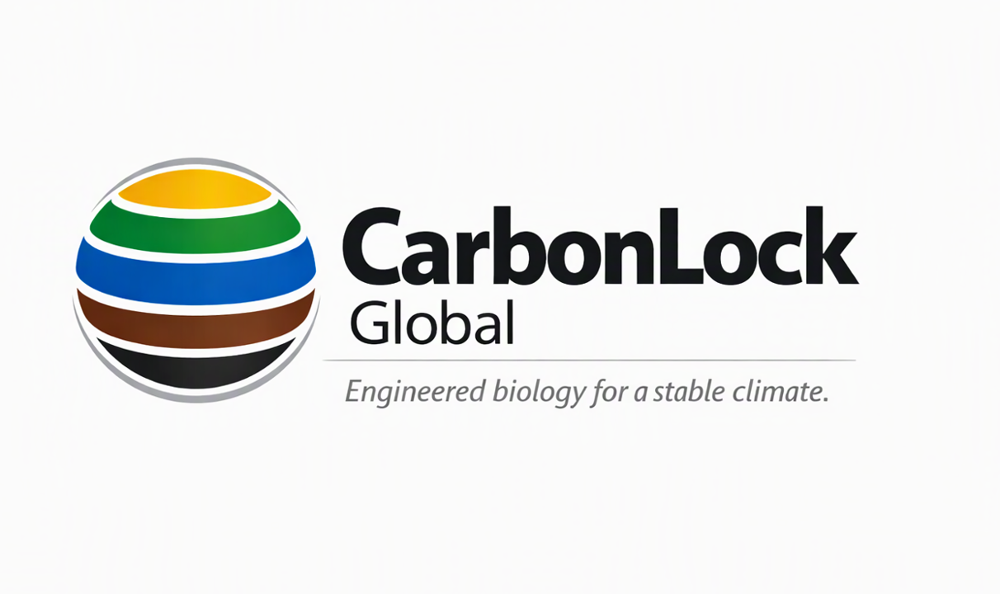

CarbonLock Global develops engineered biological sinks that convert atmospheric CO₂ into stable, encapsulated biomass. Our systems deliver permanent, verifiable, infrastructure‑grade carbon removal at global scale.
CarbonLock Global was founded on a simple belief: solving climate change requires more than reducing emissions. It also requires scalable systems capable of removing carbon already present in the atmosphere. Drawing on decades of major infrastructure experience, we are developing engineered biological carbon removal systems designed for long-term deployment and measurable climate impact.
Scientific pathways suggest that humanity may need to remove billions of tonnes of carbon dioxide from the atmosphere during this century. CarbonLock Global exists to help make that possible through scalable biological carbon removal infrastructure.
LEARN MORE →We harness sunlight, seawater, algae and wastewater nutrients to convert atmospheric carbon into stable biomass suitable for long-term storage. Our approach combines natural biological processes with infrastructure-scale engineering to create practical pathways for carbon removal.
LEARN MORE →We envision a future where carbon removal infrastructure operates across suitable regions worldwide, helping restore atmospheric carbon balance for future generations. CarbonLock Global is being developed with that long-term vision in mind.
LEARN MORE →CarbonLock Global was founded by Kevin after nearly four decades designing and delivering major water infrastructure projects. The company emerged from the belief that climate solutions must be engineered not only to work, but to scale. Experience in large infrastructure systems informs every aspect of the CarbonLock approach, from project development and operational design through to long-term deployment pathways.
FOUNDER →CarbonLock Global • For our Future
Email: info@carbonlockglobal.com
Location: Australia
CONTACT US →